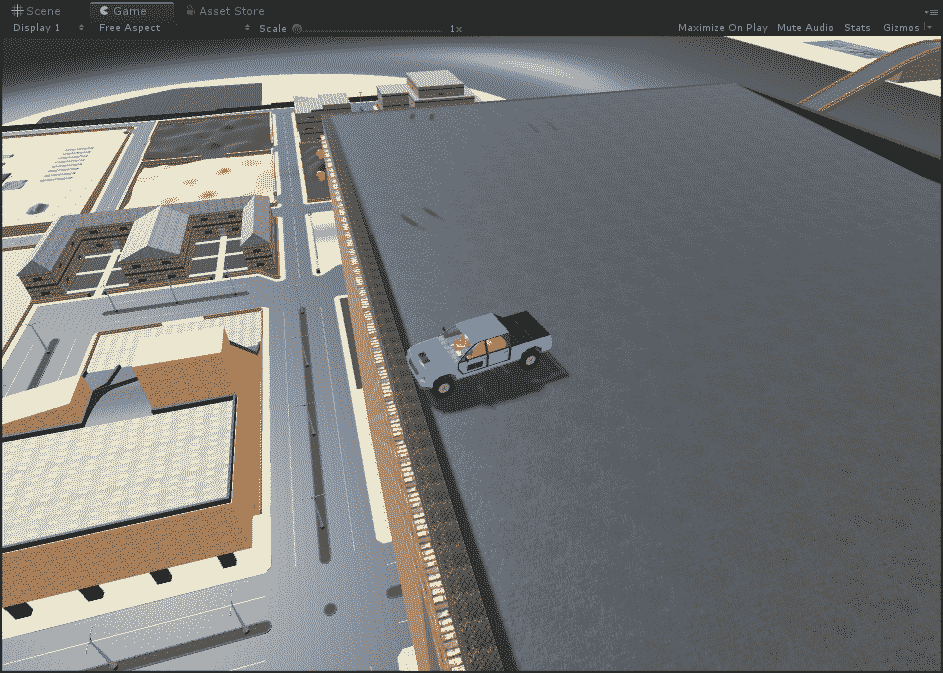
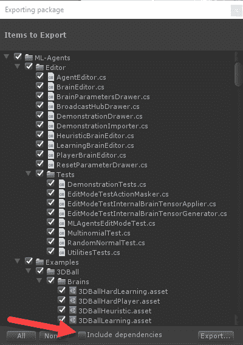
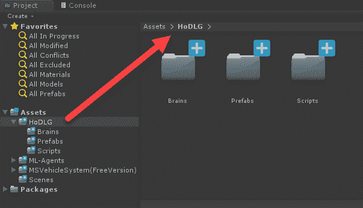
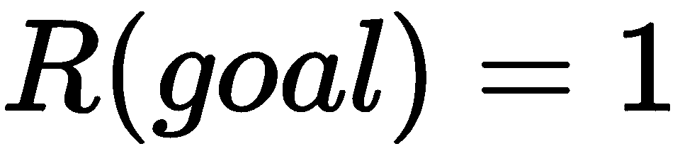
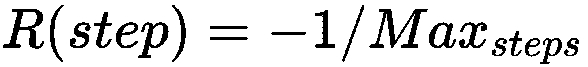
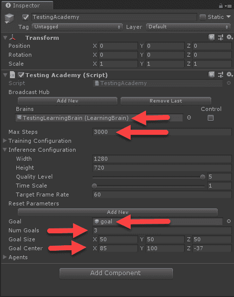
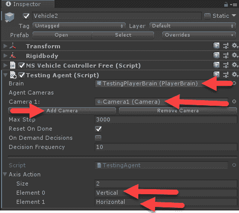
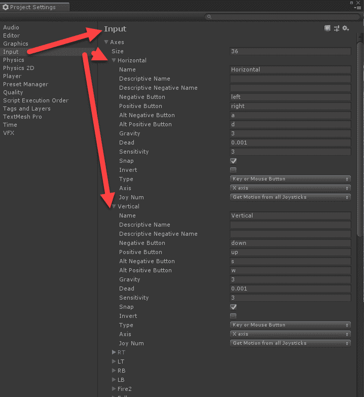
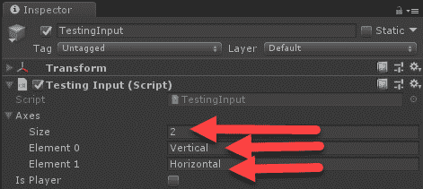

虽然ML-Agents框架为你的游戏构建AI代理提供了强大的功能，但它也为调试和测试提供了自动化。任何复杂软件的开发都需要由有才能的质量保证团队进行广泛的产品测试和审查。测试每一个方面、每一种可能的组合和每一个级别都是非常耗时和昂贵的。因此，在这一章中，我们将把ML-agent作为测试一个简单游戏的自动化方法。当我们改变或修改游戏时，我们的自动测试系统可以通知我们任何可能破坏测试的问题或可能的改变。例如，我们还可以进一步用ML-agent来评估培训绩效。
以下是本章内容的简要总结:
在这一章中，我们将假设你对ML-Agents工具包有很好的了解，并且对Unity游戏引擎有所熟悉。你还应该很好地掌握奖励函数和使用ML-agent的模仿学习。
在下一节中，我们将从下载和导入游戏开始；我们将在接下来的部分教ML-Agents玩。这应该被认为是一个高级章节，即使是对Unity有经验的用户。因此，如果你是Unity和/或C#的新手，请慢慢来，慢慢完成练习。在本章结束时，如果你已经完成了所有的练习，你应该已经成为一名Unity pro了。
我们要看的游戏是一个免费的演示样本资产，是一个典型游戏的优秀范例。我们将测试的游戏将使用离散控制机制和第一人称视角，就像我们过去看过的游戏一样。我们将在这里向你展示的技术是如何映射/侵入一个游戏的控制器，以便它可以由ML-Agents驱动。使用这种技术可以让你在任何现有的游戏中加入ML-agent，尽管不同的控制器，比如第三人称或者自上而下，可能需要稍微改变一下方法。
如果你认为自己是一个有经验的Unity用户，并且有自己的使用FPS系统的项目，那么你应该继续尝试将这个例子应用到你自己的游戏或例子中。
你通常会发现Unity缺乏好的游戏项目样本，这是由于一个有点问题的技术叫做资产翻转。从本质上来说，一些开发者会拿一个样本项目，迅速将其作为自己的游戏进行皮肤处理，然后转售。这种做法主要是在Unity社区中遭到反对，因为它通常会对这个优秀的游戏引擎产生负面影响。仅仅作为样本的快速游戏往往质量很差，不受支持，更不用说这些开发者只使用免费许可证，这意味着这些设计糟糕的游戏也是用Unity 制作的发货的。
我们想说明如何将多智能体整合到游戏中进行测试、调试和/或作为人工智能的增强。让我们从导入基础项目并设置游戏在编辑器中运行开始。在这个过程中，我们可能不得不调整一些事情来让事情正常运行，但这是我们的意图。打开Unity编辑器，按照下一节中的练习来设置基本游戏项目:
选择要下载的资产包
禁用场景中的画布用户界面

为我们的目标找到一个好地方
即使你找不到具体的地点，也要找到一个很难到达的地方。这样，代理将不得不广泛地探索该级别，以便找到目标(或多个目标)。在我们的例子中，我们将把随机的目标方块放到关卡上，并鼓励代理去寻找它们。通过这种方式，我们还可以根据它发生的频率来绘制出被探索的区域，然后确定如何覆盖其他区域进行测试。在此之前，我们将在下一节添加ML-agent。
在写这本书的时候，ML-Agents是作为GitHub项目开发和发布的。随着产品的成熟，它很可能会作为自己的资产包来交付，但目前不是这样。
因此，我们首先需要将ML-Agents作为一个资产包导出。打开ML-Agents或Unity SDK项目的新Unity Editor会话，并遵循以下步骤:

将ML代理导出为资产包

创建新的项目文件夹
现在我们已经导入了ML-agent，并且为我们的测试游戏打下了基础，我们可以继续添加ML-agent的学习部分来进行测试。
该场景目前没有明确的目标。有大量的开放世界和探索风格的游戏，其目标是非常松散的定义。然而，就我们的目的而言，我们只想让代理测试整个游戏水平，并希望找出任何我们从未预见到的游戏缺陷或策略。当然，这并不意味着如果汽车驾驶代理变得很好，我们也可以用他们作为游戏对手。底线是我们的代理需要学习，它通过奖励做到这一点；因此，我们需要做一些奖励函数。
让我们首先为我们的目标定义一个奖励函数，如下所示:

这很简单。每当代理人遇到一个目标，他们将获得1的奖励。现在，为了避免代理花费太长时间，我们还将引入一个标准步骤奖励，如下所示:

这意味着我们对每个代理操作应用-1除以最大步骤数的步骤奖励。这是相当标准的(例如，我们的走廊代理使用它)，所以这里没有什么新的东西。所以，我们的奖励函数会很简单，这很好。
在许多情况下，你的游戏可能有明确的目标，你可以用它来给予奖励。例如，一个驾驶游戏会有一个清晰的目标，我们可以为我们的代理绘制。在这种情况下，在我们的开放世界游戏中，为代理添加目标来定位是有意义的。当然，你如何实施你的奖励结构很重要，但是使用对你的情况有意义的东西。
定义了奖励函数后，是时候将目标的概念引入我们的游戏了。我们希望保持这个系统的通用性，所以我们将在一个名为TestingAcademy的新对象中构建一个目标部署系统。这样，你可以把这个学院放入任何类似的FPS或第三人称控制的世界，它会一样工作。
打开新组合项目的编辑器，并按照下一个练习构建TestingAcademy对象:
using MLAgents;
using UnityEngine;
namespace Packt.HoDLG
{
public class TestingAcademy : Academy
{
public GameObject goal;
public int numGoals;
public Vector3 goalSize;
public Vector3 goalCenter;
public TestingAgent[] agents;
public GameObject[] goals;
}
}
本章练习的所有代码都包含在本书源代码的Chapter_12_Code.assetpackage中。
public override void InitializeAcademy()
{
agents = FindObjectsOfType<TestingAgent>();
goals = new GameObject[numGoals];
}
public override void AcademyReset()
{
if (goalSize.magnitude > 0)
{
for(int i = 0; i < numGoals; i++)
{
if(goals[i] != null && goals[i].activeSelf)
Destroy(goals[i]);
}
for(int i = 0; i < numGoals; i++)
{
var x = Random.Range(-goalSize.x / 2 + goalCenter.x, goalSize.x / 2 + goalCenter.x);
var y = Random.Range(-goalSize.y / 2 + goalCenter.y, goalSize.y / 2 + goalCenter.y);
var z = Random.Range(-goalSize.z / 2 + goalCenter.z, goalSize.z / 2 + goalCenter.z);
goals[i] = Instantiate(goal, new Vector3(x, y, z), Quaternion.identity, transform);
}
}
}
随着新的TestingAcademy脚本的创建，我们可以继续将组件添加到游戏对象中，并在下一节中设置学院。
随着TestingAcademy脚本的创建，是时候通过以下步骤将其添加到游戏对象中了:

交换目标对象的材质

设置测试学院
此时，您可能想运行项目；如果您刚刚下载了代码，您可以这样做，但是要等到我们在下一节中定义了TestingAgent之后。
当然，如果没有一个代理与环境进行交互和学习，我们的测试(或者无论我们想进行多远的模拟)都不会有太大的作用。在下一个练习中，我们将定义描述TestingAgent组件的脚本:
using MLAgents;
using UnityEngine;
namespace Packt.HoDLG
{
public class TestingAgent : Agent
{
public string[] axisAction;
protected Vector3 resetPos;
protected Quaternion resetRot;
}
}
public override void InitializeAgent()
{
base.InitializeAgent();
if (axisAction.Length != brain.brainParameters.vectorActionSize[0])
throw new MLAgents.UnityAgentsException("Axis actions must match agent actions");
resetPos = transform.position;
resetRot = transform.rotation;
}
public override void CollectObservations(){ }
public override void AgentAction(float[] vectorAction, string textAction)
{
AddReward(-1f / agentParameters.maxStep);
MoveAgent(vectorAction);
}
public void MoveAgent(float[] act)
{
for(int i=0;i<act.Length;i++)
{
var val = Mathf.Clamp(act[i], -1f, 1f);
TestingInput.Instance.setAxis(val,axisAction[i]);
}
}
有了新的脚本，我们可以在下一部分开始设置TestingAgent组件。
现在，我们在这里构建的系统是相当通用的，它旨在用于多种环境。在我们设置东西的时候，请记住这一点，尤其是当一些概念看起来有点抽象的时候。打开编辑器，让我们将TestingAgent脚本添加到一个对象中:
选择视觉观察相机以用作代理的输入

设置TestingAgent组件
这就完成了TestingAgent的建立；如您所见，运行它不需要太多的配置或代码。将来，您可能会看到更高级的测试/调试方法，或者以这种方式构建代理。然而现在，我们需要通过注入Unity输入系统来完成我们的例子，我们将在下一节中完成。
Unity最引人注目的特性之一是它能够跨任何系统跨平台，随之而来的是几个有用的抽象层，我们可以用它们来注入我们的代码。然而，有问题的游戏需要遵循Unity最佳实践，以使注入变得容易。这并不是说我们不能通过覆盖游戏的输入系统来做到这一点；只是没那么容易。
在我们开始描述注入是如何工作的之前，让我们后退一步，看看使用Unity input系统的最佳实践。多年来，Unity input系统已经从设备用于输入的简单查询发展到现在使用的更加跨平台的系统。然而，许多开发者，包括Unity本身，仍然使用输入法来查询特定的键码。最佳实践是定义一组定义游戏输入的轴(输入通道)。
通过下面的练习，我们可以很容易地看到它在游戏中是如何定义的:

检查输入轴设置
正如你在本书的几个章节中看到的，使用. 6版本的ML-Agents，当前的离散动作解决方案远不如连续动作。因此，这将是我们今后的优先选择。
在这一点上，你可能想知道为什么我们使用离散的动作；这是一个好问题。Unity未来如何处理这种二分法还有待观察。在下一节，我们将看看如何注入到输入系统。
我们将使用一种叫做 Singleton 的模式来实现一个我们可以从代码中的任何地方访问的类，就像目前使用的Unity中的输入类一样。Unity的好处是使输入完全静态，但出于我们的目的，我们将使用定义良好的脚本版本。打开编辑器，按照下一个练习构建TestingInput脚本和对象:
using UnityEngine;
namespace Packt.HoDLG
{
/// <summary>
/// Inherit from this base class to create a singleton.
/// e.g. public class MyClassName : Singleton<MyClassName> {}
/// </summary>
public class Singleton<T> : MonoBehaviour where T : MonoBehaviour
{
// Check to see if we're about to be destroyed.
private static bool m_ShuttingDown = false;
private static object m_Lock = new object();
private static T m_Instance;
/// <summary>
/// Access singleton instance through this propriety.
/// </summary>
public static T Instance
{
get
{
if (m_ShuttingDown)
{
Debug.LogWarning("[Singleton] Instance '" + typeof(T) +
"' already destroyed. Returning null.");
return null;
}
lock (m_Lock)
{
if (m_Instance == null)
{
// Search for existing instance.
m_Instance = (T)FindObjectOfType(typeof(T));
// Create new instance if one doesn't already exist.
if (m_Instance == null)
{
// Need to create a new GameObject to attach the singleton to.
var singletonObject = new GameObject();
m_Instance = singletonObject.AddComponent<T>();
singletonObject.name = typeof(T).ToString() + " (Singleton)";
// Make instance persistent.
DontDestroyOnLoad(singletonObject);
}
}
return m_Instance;
}
}
}
private void OnApplicationQuit()
{
m_ShuttingDown = true;
}
private void OnDestroy()
{
m_ShuttingDown = true;
}
}
}
using System.Collections.Generic;
using System.Linq;
using UnityEngine;
namespace Packt.HoDLG
{
public class TestingInput : Singleton<TestingInput>
{
public string[] axes;
public bool isPlayer;
}
}
void Start()
{
axisValues = new Dictionary<string, float>();
//reset the axes to zero
foreach(var axis in axes)
{
axisValues.Add(axis, 0);
}
}
public void setAxis(float value, string axisName)
{
if (isPlayer == false && axes.Contains(axisName)) //don't if player mode
{
axisValues[axisName] = value;
}
}
public float getAxis(string axisName)
{
if (isPlayer)
{
return Input.GetAxis(axisName);
}
else if(axes.Contains(axisName))
{
return axisValues[axisName];
}
else
{ return 0; }
}
这就建立了TestingInput脚本；现在，我们需要移动到下一部分，将它添加到场景中。
Singletons可以从任何地方、任何地方调用，它们实际上不需要场景中的一个游戏对象。但是，通过将对象添加到场景中，我们会更加清楚所需的依赖性，因为它允许我们为特定场景设置所需的参数。打开Unity编辑器，按照下一个练习将TestingInput组件添加到场景中:

设置要覆盖的轴
此时，您不能真正运行项目，因为实际的输入系统还没有覆盖任何东西。我们在下一节中完成最后一次注入。
此时，我们已经有了一个完整的测试系统；我们只需要完成注射的最后部分。这种手术可能需要敏锐的眼光和一点代码挖掘。幸运的是，有一些好的、清晰的指标，你可以用它们来确定注射的位置。打开编辑器，按照下面的步骤完成注射:
case ControlTypeFree.windows:
verticalInput = Input.GetAxis (_verticalInput);
horizontalInput = Input.GetAxis (_horizontalInput);
mouseXInput = Input.GetAxis (_mouseXInput);
mouseYInput = Input.GetAxis (_mouseYInput);
mouseScrollWheelInput = Input.GetAxis (_mouseScrollWheelInput);
break;
}
verticalInput = TestingInput.Instance.getAxis(_verticalInput);
horizontalInput = TestingInput.Instance.getAxis(_horizontalInput);
public void MoveAgent(float[] act)
{
for(int i=0;i<act.Length;i++)
{
var val = Mathf.Clamp(act[i], -1f, 1f);
TestingInput.Instance.setAxis(val,axisAction[i]);
}
}
注意在TestingAgent MoveAgent方法中高亮显示的行。这是我们覆盖代理的输入并将值注入游戏的地方。
配置所需的大脑
打开Unity编辑器，从 HoDLG | Brains 文件夹中选择 TestingLearningBrain ，在检查器中打开。
设置TestingPlayerBrain的参数
有几个参数需要设置；它们总结如下:
配置测试学习大脑
学习大脑的配置要简单得多，但是它仍然是必需的，即使是在播放器模式下运行示例时也是如此(如果您还记得的话，它就是这样设置的)。

朝着目标前进
当你玩够了，停止游戏。
Now that we are able to play the game through ML-Agents by using a configured player brain, we will switch to a learning brain and let an agent take control in the next section.
训练时间到了
打开位于ML-Agents/ml-agents/config文件夹中的trainer_config.yaml文件。
TestingLearningBrain:
use_recurrent: true
sequence_length: 64
num_layers: 1
hidden_units: 128
memory_size: 256
beta: 1.0e-2
gamma: 0.99
num_epoch: 3
buffer_size: 1024
batch_size: 64
max_steps: 5.0e5
summary_freq: 1000
time_horizon: 64
mlagents-learn config/trainer_config.yaml --run-id=testing --train
通过模仿进行测试
随着一切的设置和我们现在通过ML-agent路由输入事件的能力，我们可以以agent需要学习的形式捕获玩家输入。让我们打开一个备份Unity并设置场景来捕捉球员录像，如下所示:
在层级窗口中选择车辆2 对象。回想一下，这是附加测试代理脚本的地方。
向代理添加演示记录器
选择 TestingAcademy 对象，确保禁用脑上的控制选项。我们希望播放器在录制时控制代理。
配置代理使用IL
打开同一个项目的Unity编辑器，找到包含代理的 Vehicle2 对象。
TestingLearningBrain:
trainer: offline_bc
max_steps: 5.0e5
num_epoch: 5
batch_size: 64
batches_per_epoch: 5
num_layers: 2
hidden_units: 128
sequence_length: 16
use_recurrent: true
memory_size: 256
sequence_length: 32
demo_path: ./UnitySDK/Assets/Demonstrations/Testing.demo
mlagents-learn config/offline_bc_config.yaml --run-id=testing_il --train
这个演示/游戏相当稳定，不容易出现任何明显的问题，这使得测试它的明显问题变得困难。然而，希望你能意识到，如果这种类型的系统在游戏的早期实现，即使只是为了测试，它也能提供快速发现bug和其他问题的能力。当然，目前，我们识别任何问题的唯一方法是观看代理播放，这并不能节省我们任何时间。我们需要的是一种跟踪代理活动并确定代理是否(以及何时)发现自己有麻烦的方法。幸运的是，我们可以通过添加分析来轻松添加这种形式的跟踪，这将在下一节中介绍。
分析测试过程
打开Unity编辑器，从菜单中选择窗口|通用|服务。这将打开一个名为服务的新窗口，通常位于检查员窗口的上方。
为您的项目设置分析
点击按钮启用谷歌分析。然后选择发现玩家洞察开关，会提示您在编辑器中按播放。
这将打开您的默认web浏览器到您的项目分析页面，您应该看到一些事件，如 appStart 和 appStop 。
发送自定义分析
If you have used the analytics service previously, you may have your own best practices for how to track your game usage; if so, feel free to use that. The method that we will present here is intended as a start for how you can go about setting up and sending custom analytics for training, or even for tracking player usage.
让我们首先打开Unity编辑器，然后进行下一个练习:
在HoDLG Scripts文件夹中创建一个名为TestingAnalytics的新C#脚本。
using UnityEngine;
namespace Packt.HoDLG
{
public class TestingAnalytics : Singleton<TestingAnalytics>
{
private TestingAcademy academy;
private TestingAgent[] agents;
private void Start()
{
academy = FindObjectOfType<TestingAcademy>();
agents = FindObjectsOfType<TestingAgent>();
}
public string CurrentGameState
{
get
{
var state = string.Empty;
foreach (var agent in agents)
{
foreach (var goal in academy.goals)
{
var distance = Vector3.Distance(goal.transform.position, agent.transform.position);
state += agent.name + " distance to goal " + distance + "/n";
}
}
return state;
}
}
}
}
设置分析事件跟踪器
按如下方式配置组件:
我们即将结束另一个章节，当然，我们正在接近你最喜欢的部分，练习。
练习
配置测试代理使用不同的摄像机进行视觉观察输入。
设置测试代理在另一辆车上运行，并让ML-Agents同时控制两个代理。
摘要
Of all the chapters in this book, this may be the most useful if you are in the process of developing your own game. Game testing is one of those things that requires so much time and attention, it has to be up for some form of automation. While it makes sense for DRL to work well in this area for almost any game, it remains to be seen whether that is one of the niches for this new learning phenomena. One thing that's for sure, however, is that ML-Agents is more than capable of working as a testing harness, and we are sure that it will only get better over time.
在这一章中，我们看了如何建立一个通用的测试平台，由ML-Agents提供支持，我们可以用它来自动测试任何游戏。我们首先查看了我们需要调整的每个组件，学院和代理，以及如何将它们一般化以进行测试。然后，我们看了看如何注入到Unity输入系统中，并使用我们的TestingAgent来覆盖游戏的输入，并学习如何自己控制它。之后，我们研究了如何通过使用离线IL和录制一个演示文件来更好地设置我们的测试，稍后我们可以使用这个演示文件来培训代理。最后，为了看看我们的测试做得如何，我们添加了分析，并根据我们的需要对它们进行了定制。
下一章将是我们的最后一章，也是我们最后一次讨论游戏的深度学习；恰当地说，我们将看看军情六处和DRL的未来。
The next chapter will be our final chapter and our last discussion of deep learning for games; appropriately enough, we will look at what the future holds for ML-Agents and DRL.